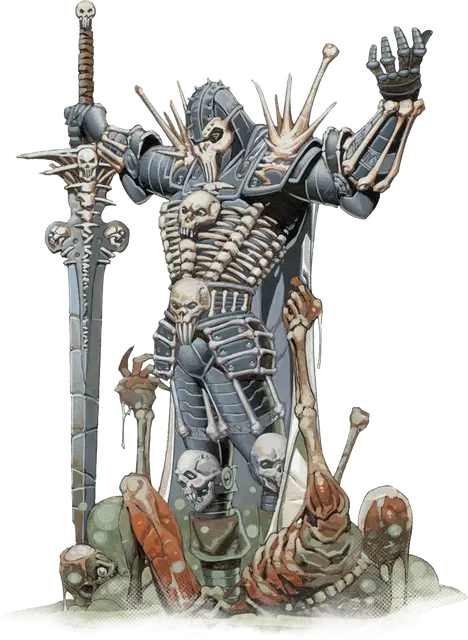

Костяной рыцарь
Bone Knight
Средний Гуманоид (Любая раса), любое мировоззрение кроме доброго

Класс Доспеха 20 (костяной доспех)
Хиты 84 (13к8 + 26)
Скорость 30 футов
| мод | спас | ||
|---|---|---|---|
| СИЛ | 18 | +4 | +4 |
| ЛОВ | 13 | +1 | +1 |
| ТЕЛ | 14 | +2 | +2 |
| мод | спас | ||
|---|---|---|---|
| ИНТ | 12 | +1 | +1 |
| МДР | 14 | +2 | +5 |
| ХАР | 16 | +3 | +6 |
Навыки Атлетика +7, Запугивание +6, Обман +6
Сопротивление урону некротическая энергия, яд
Чувства пассивное Восприятие 12
Языки один любой язык (обычно Общий)
Опасность 5 (1800 опыта)
Бонус мастерства +3
Особенности
Костяной командир. Бонусным действием рыцарь может нацелиться на одного скелет [skeleton] или зомби [zombie], которого он может видеть в пределах 30 футов. Цель должна совершить спасбросок Мудрости Сл 14. В случае провала цель должна подчиняться командам рыцаря, пока рыцарь не умрёт или не окончит служение это бонусным действием. Одновременно рыцарь может командовать 12 мертвецами.
Главнокомандующий бледного знамени. Находясь в пределах 60 футов от рыцаря, любой союзник-Нежить рыцаря получает преимущество на спасброски против любых эффектов.
Использование заклинаний. Рыцарь является заклинателем 8-го уровня. Его базовой характеристикой является Харизма (Сл спасброска от заклинаний 14, +6 к атакам заклинаниями). У рыцаря подготовлены следующие заклинания паладина:
• 1 уровень (4 ячейки): приказ [command], вызов на дуэль [compelled duel], адское возмездие [hellish rebuke], гневная кара [wrathful smite]
• 2 уровень (3 ячейки): клеймящая кара [branding smite], корона безумия [crown of madness], тьма [darkness], поиск скакуна [find steed], магическое оружие [magic weapon]
Действия
Мультиатака. Рыцарь дважды атакует одним из своих оружий.
Двуручный меч. Рукопашная атака оружием: +7 к попаданию, досягаемость 5 футов. одна цель. Попадание: 11 (2к6+4) рубящего урона.
Длинный лук. Дальнобойная атака оружием: +4 к попаданию, дистанция 150/600 футов, одна цель. Попадание: 5 (1к8 + 1) колющего урона.
Описание
Костяные рыцари – чемпионы ордена Изумрудного Когтя.
Облаченные в характерные костяные доспехи - тяжелые доспехи, украшенные костями поверженных врагов, - эти грозные воины командуют отрядами нежити, преследуя зловещие цели Леди Иллмерроу.
Патриоты Каррната. В начале последней войны Каррнат обратился к некромантам Крови Вол, чтобы поддержать национальную армию силами нежити. Скелеты и зомби, созданные некромантами, были безмозглыми существами, которые нуждались в руководстве. Первые костяные рыцари были созданы, чтобы обеспечить этот контроль.
Преданные паладины Крови Вол были закованы в доспехи из кости, чья магия фокусировала их божественные дары, позволяя им командовать отрядами нежити. Костяные доспехи нельзя снять, не убив рыцаря, который их носит, и, надевая их, каждый костяной рыцарь понимал, что его прежняя жизнь закончилась.
Падение Изумрудного Когтя. Во время Последней Войны многие костяные рыцари поступили на службу в Орден Изумрудного Когтя, вселяя страх во врагов Каррната. За последнее десятилетие Король Каррната Каюс III сделал многое, чтобы обеспечить мирное завершение Последней Войны. По условиям Тронхолдского Договора, Кай запечатал большую часть нежити Каррната в глубоких склепах, и Орден Изумрудного Когтя был расформирован. Несколько костяных рыцарей остались служить короне, но большинство были отвергнуты - все еще привязанные к своим костяным доспехам и убежденные в превосходстве Каррната. Эти костяные рыцари чувствовали, что Кай предал их и их народ, и возглавили некогда гордый орден, чтобы найти новую цель в служении Леди Илмарроу.